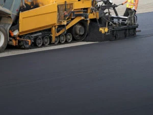

All products
Asphalt & crack sealant
Pulverized tire rubber for rubber-modified asphalt and flexible crack sealants.

Grades and documentation
Cryogenic and ambient crumb is available from 10 to 80 mesh. Each shipment includes a Certificate of Analysis.
Packaging
Order in bulk, 2,000 lb super sacks or 50 lb poly bags. Ask about supply for your provincial, state or local project specification.
Add to quote request